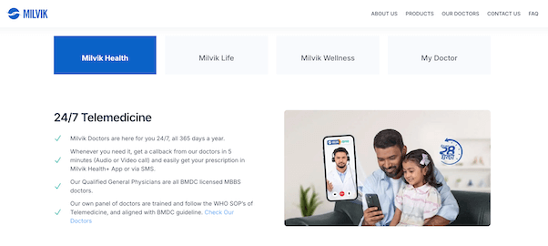
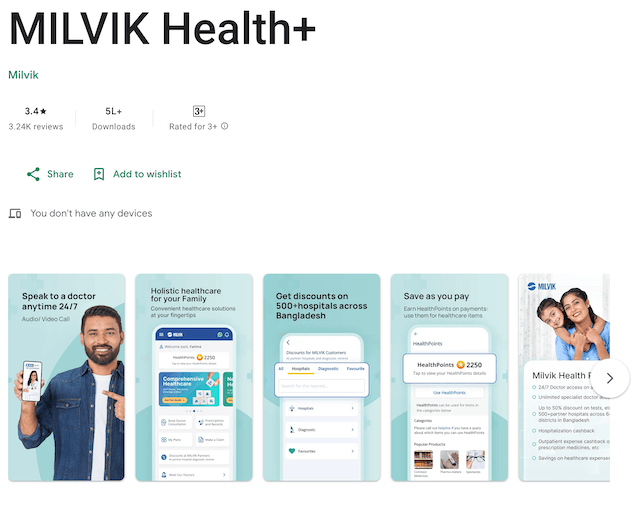

<div id="project">
	<section class="content">
		<div class="block-content">			
			<div class="project-title">
				<h4>Milvik</h4>
				<p>Enterprise Web / Distributed System / Mobile App</p>
			</div>
			<p class="project-description">Milvik is a fintech company specializing in affordable digital health and insurance services for emerging markets. They offer a suite of services, including telemedicine, delivered via mobile platforms.
				<br/>As a Senior Staff Software Engineer, you were responsible for the development of Milvik's "Mhealth" system. This critical system enabled end consumers to conveniently access online medical consultations directly through their mobile phones, making essential healthcare services more accessible.</p>
			<div class="project-media">
				
				
			</div>        
		</div>
	</section>
 </div>

